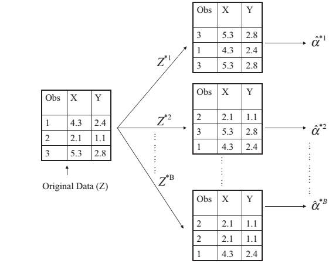

10. Phương pháp ước lượng lấy mẫu¶
10.1. Giới thiệu¶
Các phương pháp thống kê thông thường sẽ kiểm định và xác định các khoảng tin cậy. Các phương pháp này đều dựa trên giả định dữ liệu có phân phối chuẩn hoặc phân phối thông dụng nào đó và phụ thuộc vào quá trình lấy mẫu.
Đối với các phân tích thông thường, có 2 nhánh:
- Permutation test
- Boostrapping
Đối với data mining, các phương pháp của “Resampling” được dùng để đánh giá chât lượng mô hình. Phương pháp này cho phép đánh giá gần đúng MSE trên tập dữ liệu test
10.2. Cross-Validation¶
10.2.1. Validation Set Approach¶
Validation Set Approach: Phương pháp chia đôi tập dữ liệu thành 2 phần: train \(\&\) test. Mô hình thu được từ tập “train” sẽ được ứng dụng để tính toán bên tập “test”
10.2.2. Leave-One-Out Cross-Validation (LOOCV)¶
LOOCV là phương pháp tương tự như Validation Set. Tuy nhiên, LOOCV khác như sau:
- Thay vì chia thành 2 tập dữ liệu ngẫu nhiên, LOOCV chia tập dữ liệu thành n lần (n là số quan sát trong tập):
- Mỗi lần chia tập dữ liệu, tập train có (n-1) quan sát, tập test có 1 quan sát
- Xây dựng mô hình, tính MSE cho mỗi lần
- MSE cho cả phương pháp bằng trung bình MSE
Cách làm như sau:
Lần 1: Train = \({(x_2, y_2),...,(x_n,y_n)}\), Test = \({x_1,y_1}\)
Lần 2: Train = \({(x_1, y_1),(x_3, y_3)...,(x_n,y_n)}\), Test = \({x_2,y_2}\)
Lần n: Train = \({(x_1, y_1),...,(x_{n-1},y_{n-1})}\), Test = \({x_n,y_n}\)
MSE với mỗi lần chia được tính như sau:
\[MSE_1 = (y_1 - \hat{y_1})^2\]\[MSE_2 = (y_2 - \hat{y_2})^2\]\[MSE_n = (y_n - \hat{y_n})^2\]
MSE trung bình được tính như sau:
Điểm mạnh của LOOCV:
- Giảm rõ rệt bias (sai lệch so với thực tế) so với phương pháp “Validation Set Approach - VSA”"
- Tính ổn định tốt hơn so với VSA. Với VSA, mỗi lần chia thành các tập train \(\&\) set đều được làm ngẫu nhiên, do đó, MSE sẽ khác với mỗi lần thực hiện mô hình
Điểm yếu của LOOCV:
- Tốn kém và mất thời gian
10.2.3. k-Fold Cross-Validation¶
Thuật toán của k-Fold như sau:
Bước 1: Chia tập dữ liệu thành k phần ngẫu nhiên
Bước 2: Sử dụng tập con thứ nhất sẽ được dùng làm tập Validate, tính \(MSE_1\)
Bước 3: Sử dụng tập con thứ hai làm tập validate, tính \(MSE_2\)
Làm tương tự đến tập k
Bước 4: MSE của tập test được ước lượng bằng trung bình cộng của các MSE
\[CV_{(k)}=\frac{1}{n}\sum_{i=1}{k}MSE_i\]
Lưu ý: LOOCV là trường hợp đặc biệt của k-fold CV với \(k=n\)
CV đối với mô hình phân loại (Classification)
Đối với mô hình LOOCV
trong đó
Các mô hình khác được tính tương tự
10.3. Boostrap¶
Boostrap là phương pháp rất mạnh để ước lượng mô hình và các chỉ số thống kê.
Giả sử ta cần ước lượng giá trị trung bình của X nhưng chỉ có \(n=3\) quan sát. Ta áp dụng thuật toán như sau:
- Bước 1: Lấy ngẫu nhiên \(n=3\) quan sát bất kỳ từ tập dữ liệu, cho phép lấy lại - nghĩa là 1 quan sát có thể xuất hiện 1 hoặc nhiều lần khi lấy ngẫu nhiên
- Bước 2: Tính giá trị trung bình: \(\hat{X_1}\)
- Bước 3: Lặp lại bước 1,2 với \(B\) lần đủ lớn
- Bước 4: Giá trị trung bình của X được ước lượng bằng trung bình cộng của \(\hat{X_i}\)
Gọi \(\alpha_j\) là giá trị (hoặc ước lượng) của \(\alpha\) trong mỗi lần lấy dữ liệu của boostrap. Gọi \(\bar{\hat{\alpha}}\) là ước lượng của \(alpha\) trong toàn bộ dữ liệu, ta có:

10.4. Permutation tests¶
Giả sử ta có 2 nhóm bệnh nhân như bảng dưới đây và đặt ra câu hỏi liệu có sự khác biệt về mean giữa 2 nhóm không:
| Treatment A | Treatment B |
|---|---|
| 40 | 57 |
| 57 | 64 |
| 45 | 55 |
| 55 | 62 |
| 58 | 65 |
Cách thông thường (parametric approach):
- Giả định cả 2 nhóm có phân phối chuẩn, cùng phương sai
- Tính t-statistic, so sánh với phân bố lý thuyết.
- Nếu các quan sát thực tế không nằm trong khoảng 95% của lý thuyết, loại bỏ \(H_0\)
Permutation:
- Tính t-statistic cho 10 quan sát
- Đặt 10 chỉ số t-statistic đó vào 1 nhóm
- Lấy ngẫu nhiên 5 score cho nhóm A, 5 score cho nhóm B
##Ví dụ với R
###Cross Validation
mpg_auto <- mtcars[mtcars$am == 0,]$mpg # automatic transmission mileage
mpg_manual <- mtcars[mtcars$am == 1,]$mpg # manual transmission mileage
transmission_ttest <- t.test(mpg_auto, mpg_manual)
transmission_ttest$p.value
## [1] 0.001373638
###Boostrap
- Sử dụng package boot để phân tích booststrap:
- boot: Tính boostrap
- boot.ci: Tính confidence level
bootobject <- boot(data = , statistic = , R= , ...)
#R: Số lần muốn bootstrap
#statistic: chỉ số thống kê muốn tính boostrap
boot.ci(bootobject, conf = , type =)
library(boot)
library(dplyr)
library(broom)
mean.fun <- function(d, i){
m <- mean(d$mpg[i])
return(m)
}
#boot với tidy
mtcars %>%
group_by(vs) %>%
do(boot(., mean.fun, 1000,
parallel = "multicore") %>% tidy) %>% print
## # A tibble: 2 x 4
## # Groups: vs [2]
## vs statistic bias std.error
## <dbl> <dbl> <dbl> <dbl>
## 1 0 16.6 -0.0638 0.851
## 2 1 24.6 -0.00281 1.42
#boot.ci
boot.mean <- boot(mtcars, mean.fun, 1000, parallel = "multicore")
boot.mean
##
## ORDINARY NONPARAMETRIC BOOTSTRAP
##
##
## Call:
## boot(data = mtcars, statistic = mean.fun, R = 1000, parallel = "multicore")
##
##
## Bootstrap Statistics :
## original bias std. error
## t1* 20.09062 -0.01904375 1.103623
boot.ci(boot.mean, conf = 0.95)
## BOOTSTRAP CONFIDENCE INTERVAL CALCULATIONS
## Based on 1000 bootstrap replicates
##
## CALL :
## boot.ci(boot.out = boot.mean, conf = 0.95)
##
## Intervals :
## Level Normal Basic
## 95% (17.95, 22.27 ) (17.82, 22.25 )
##
## Level Percentile BCa
## 95% (17.93, 22.36 ) (18.15, 22.61 )
## Calculations and Intervals on Original Scale
#boot.ci với tidy
mtcars %>%
group_by(vs) %>%
do({
boot(., mean.fun, 1000,
parallel = "multicore") -> df;
(df %>% boot.ci)$normal %>% tidy
})
## # A tibble: 2 x 4
## # Groups: vs [2]
## vs conf V2 V3
## <dbl> <dbl> <dbl> <dbl>
## 1 0 0.95 14.9 18.3
## 2 1 0.95 21.8 27.4
10.5. Tài liệu tham khảo¶
- R in Action (chapter 12)
- Introduction to Statistical Learning (chapter 5)